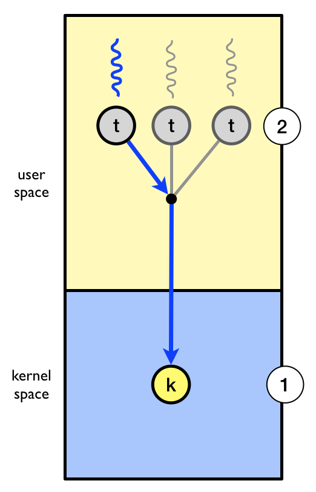
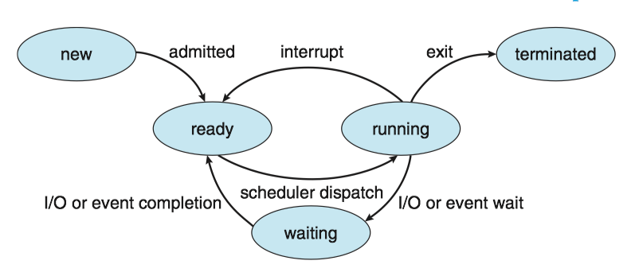
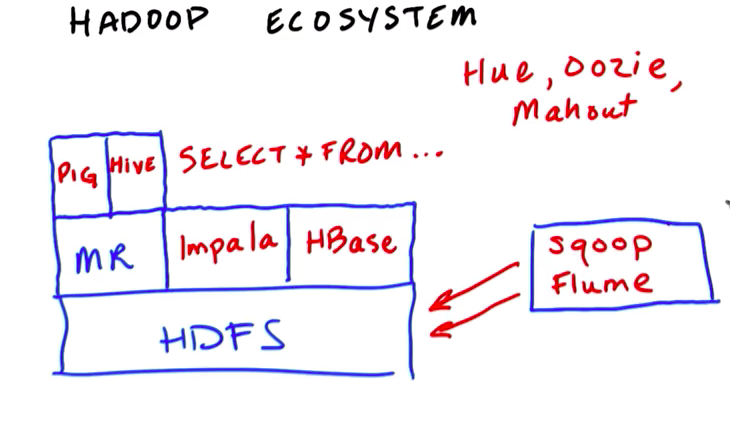

Operating System Concepts 4 - Threads & Concurrency
- 1 Overview
- 2 Multicore Programming
- 3 Multithreading Models
- 4 Thread Libraries
- 5 Implicit threading
- 6 Threading Issues
1 Overview
A thread is a basic unit of CPU utilization; it comprises a thread ID, a program counter, a register set, and a stack.
线程是一个CPU利用的基本单元，它由线程ID，程序计数器、寄存器集合和栈组成。
A traditional process has a single thread of control. If a process has multiple threads of control, it can perform more than one task at a time.
一个传统的进程只有单个控制线程，如果进程有多个控制线程，那么它能一次处理多个任务。
The figure below illustrates the difference between a traditional single-threaded process and a multithreaded process.

1.1 Motivation
Process creation is time consuming and resource intensive. It is generally more efficient to use one process that contains multiple threads.
1.2 Benefits
The benefits of multithreaded programming can be broken down into four major categories:
Responsiveness
- It allows a program to continue running even if part of it is blocked or is performing a lengthy operation, thereby increasing responsiveness to the user.
- 响应度高：即使程序部分阻塞或执行较冗长操作，该程序仍能继续执行，从而增加了对用户的相应程度。
Resource sharing
- Processes can share resources only through techniques such as shared memory and message. Such techniques must be explicitly arranged by the programmer.
- Threads share the memory and the resources of the process to which they belong by default.
- 资源共享：线程默认共享它们所属进程的内存和资源。代码和数据共享的优点是它允许一个应用程序在同一地址空间有多个不同的活动线程。
Economy
- Allocating memory and resources for process creation is costly. Because threads share the resources of the process to which they belong, it is more economical to create and context-switch threads.
- 经济：进程创建所需要的内存和资源的分配比较昂贵。由于线程能共享它们所属进程的资源，所以创建和切换线程会更为经济。
Scalability
- The benefits of multithreading can be even greater in a multiprocessor architecture, where threads may be running in parallel on different processing cores.
- 可扩展性: 多线程的优点之一是能充分使用多处理器体系结构。以便每个进程能并行运行在不同的处理器上。
2 Multicore Programming
On a system with a single computing core, concurrency merely means that the execution of the threads will be interleaved over time, because the processing core is capable of executing only one thread at a time.
On a system with multiple cores, however, concurrency means that some threads can run in parallel, because the system can assign a separate thread to each core.

Note: Concurrency v.s. Parallelism
- Concurrency: supports more than one task by allowing all the tasks to make progress.
- Parallelism: perform more than one task simultaneously.
2.1 Programming Challenges
- Identifying tasks. This involves examining applications to find areas that can be divided into separate, concurrent tasks.
- Balance. Programmer must ensure that the tasks perform equal work of equal value.
- Data splitting. The data accessed and manipulated by the tasks must be divided to run on separate cores.
- Data dependency. The data accessed by the tasks must be examined for dependencies between two or more tasks.
- Testing and debugging. Testing and debugging such concurrent programs is inherently more difficult than testing and debugging single-threaded applications.
2.2 Types of Parallelism
In general, there are two types of parallelism: data parallelism and task parallelism.
- Data parallelism focuses on distributing subsets of the same data across multiple computing cores and performing the same operation on each core.
- Task parallelism involves distributing not data but tasks (threads) across multiple computing cores.
- However, data and task parallelism are not mutually exclusive, and an application may in fact use a hybrid of these two strategies.
Data and task parallelism

3 Multithreading Models
Support for threads may be provided either at the user level, for user threads, or by the kernel, for kernel threads.
- User threads are supported above the kernel and are managed without kernel support.
- Kernel threads are supported and managed directly by the operating system.
有两种不同的方法来提供线程支持：用户层的用户级线程和内核层的内核级线程。用户级线程受内核支持，而无需内核管理；而内核级线程由操作系统直接支持和管理。事实上所有当代操作系统都支持内核级线程。
Ultimately, a relationship must exist between user threads and kernel threads. There are three common ways of establishing such a relationship: the many-to-one model, the one-to-one model, and the many-to-many model.
在用户级线程和内核级线程之间必然存在一种关系。有三种普遍建立这种关系的方法：多对一模型、一对一模型、多对多模型。
3.1 Many-to-One Model
The many-to-one model maps many user-level threads to one kernel thread. 多对一模型将许多用户级线程映射到一个内核线程。
- Thread management is done by the thread library in user space, so it is efficient. 线程管理由线程库在用户空间进行的，因而效率比较高。
- Also, because only one thread can access the kernel at a time, multiple threads are unable to run in parallel on multicore systems. 因为任意时刻只能有一个线程能够访问内核，多个线程不能并行运行在多处理器上。

3.2 One-to-One Model
The one-to-one model maps each user thread to a kernel thread. 一对一模型每个用户线程映射到一个内核线程。
- It provides more concurrency by allowing another thread to run when a thread makes a blocking system call. 该模型在一个线程执行阻塞系统调用时，能允许另一个线程继续执行，提供了更高的并发性。
- It also allows multiple threads to run in parallel on multiprocessors. 它也允许多个线程能并行运行在多处理器系统上。
- The only drawback to this model is that creating a user thread requires creating the corresponding kernel thread, and a large number of kernel threads may burden the performance of a system. 这种模型的唯一缺点是每创建一个用户线程就会创建一个相应的内核线程, 大量内核线程会影响系统性能。

3.3 Many-to-Many Model
The many-to-many model multiplexes many user-level threads to a smaller or equal number of kernel threads. 多对多模型多路复用了许多用户线程到同样数量或更小数量的内核线程上。
- Developers can create as many user threads as necessary. 开发人员可创建任意多的用户线程。
- The corresponding kernel threads can run in parallel on a multiprocessor. 相应内核线程能在多处理器系统上并发执行。
- Also, when a thread performs a blocking system call, the kernel can schedule another thread for execution. 而且当一个线程执行阻塞系统调用时，内核能调度另一个线程来执行。
- In practice it is difficult to implement. 实际上难以实施。

Most operating systems now use the one-to-one model.
3.4 User/Kernel-Level threads
(1) User-Level Threads(用户级线程)
Advantages
- Common operations can be implemented efficiently
- Interface can be tailored to application needs
Issues:
- A blocking system call blocks all user-level threads. 阻塞系统调用能够阻塞所有用户级线程。
- Asynchronous system calls can provide partial work-around. 非同步系统调用能提供部分work-around. view the definition of work-around here
- A page fault blocks all user-level threads. 缺页异常阻塞所有用户级线程。
- Matching threads to CPUs in a multiprocessor is hard：
- No knowledge about the numbers of CPUs available to address space
- No knowledge when a thread blocks
(2) Kernel-Level Threads (内核级线程)
Primary advantage
- Blocking system calls and page faults handled correctly
Issues
- Cost of performing thread operations
- Create, exit, lock, signal, wait all require user/kernel crossings
NOTE: The term virtual processor is often used instead of kernel thread.
4 Thread Libraries
A thread library provides the programmer with an API for creating and managing threads. 线程库为程序员提供了创建和管理线程的API。
Pthreads, the threads extension of the POSIX standard, may be provided as either a user-level or a kernel-level library. Pthread作为POSIX标准扩展，可以提供用户级或内核级的库。
pthread_t tid: declares the identifier for the threadpthread attr_t attr: declares the attributes for the threadpthread_attr_init(&attr): initialize thread attributes objectpthread_create(): create a new threadpthread_join(): join with a terminated threadpthread_exit(): terminate calling thread
Note: Compile and link with -pthread.
pthread详细用法和实例, 见POSIX thread (pthread) libraries
5 Implicit threading
Implicit threading(隐式线程): Transfers the creation and management of threading from application developers to compilers and run-time libraries.
- One way to address difficulties and better support the design of concurrent and parallel applications
- The advantage of this approach is that developers only need to identify parallel tasks, and the libraries determine the specific details of thread creation and management.
In this section, we explore four alternative approaches to designing applications that can take advantage of multicore processors through implicit threading.
- Thread Pools
- Fork Join
- OpemMP
- Grand Central Dispatch
5.1 Thread Pools
Two main issues exist:
- The thread will be discarded once it has completed its work. 线程在完成工作之后就要被丢弃
- Unlimited threads could exhaust system resources. 无限制的线程会耗尽系统资源
Solution -> thread pool(线程池)
- It creates a number of threads at start-up, and places them into a pool, where they sit and wait for work.
- When a server receives a request, it submits the request to the thread pool and resumes waiting for additional requests.
- If there is an available thread in the pool, it is awakened, and the request is serviced immediately.
- If the pool contains no available thread, the task is queued until one becomes free.
线程池的思想是在进程开始时创建一定数量的线程，并放入到池中以等待工作。当服务器收到请求时，它会唤醒线程池中的一个线程，并将要处理的请求传递给它，一旦线程完成了服务，它会返回到池中在等待工作。如果池中没有可用的线程，那么服务器会一直等待直到有空线程为止。
Thread pools offer these benefits:
- Servicing a request with an existing thread is often faster than waiting to create a thread. 通常用现有线程处理请求要比等待创建新的线程要快.
- A thread pool limits the number of threads that exist at any one point. 线程池限制了在任何时候可用线程的数量.
- Separating the task to be performed from the mechanics of creating the task allows us to use different strategies for running the task.
Java线程库的一个例子：
import java.util.concurrent.*;
public class ThreadPoolExample
{
public static void main(String[] args) {
int numTasks = Integer.parseInt(args[0].trim());
/* Create the thread pool */
ExecutorService pool = Executors.newCachedThreadPool();
/* Run each task using a thread in the pool */
for (int i = 0; i < numTasks; i++)
pool.execute(new Task());
/* Shut down the pool once all threads have completed */
pool.shutdown();
}
5.4 Grand Central Dispatch
Grand Central Dispatch (GCD) is a technology for Apple's Mac OS X and iOS operating systems. It is a combination of extensions to the C languages, an API, and a run-time library that allows application developers identify sections of code to run in parallel.
- GCD identifies two types of dispatch queues: serial and concurrent.
6 Threading Issues
6.1 Scheduler Activation
Many systems implementing either the many-to-many or the two-level model place an intermediate data structure between the user and kernel threads. This data structure—typically known as a lightweight process（轻量级线程）, or LWP.
- To the user-thread library, the LWP appears to be a virtual processor on which the application can schedule a user thread to run.
- Each LWP is attached to a kernel thread.
- If a kernel thread blocks, the LWP blocks as well. Up the chain, the user-level thread attached to the LWP also blocks.

Problems:
内核线程在各方面都比较灵活，但是性能不高，经常会出现请求在用户空间和内核空间的传递。那么如何在拥有内核空间线程的灵活性的同时又提高性能呢?
Solution:
Scheduler activation（调度器激活）are a threading mechanism that, when implemented in an operating system's process scheduler, provide kernel-level thread functionality with user-level thread flexibility and performance [ref].
It works as follows:
- The kernel provides an application with a set of virtual processors (LWPs), and the application can schedule user threads onto an available virtual processor.
- Furthermore, the kernel must inform an application about certain events. This procedure is known as an upcall(向上调用).
- Upcalls are handled by the thread library with an upcall handler, and upcall handlers must run on a virtual processor.
- While the user threading library will schedule user threads, the kernel will schedule the underlying LWPs.
Example [ref]:
Let’s study an example of how scheduler activations can be used. The kernel has allocated one kernel thread (1) to a process with three user-level threads (2). The three user level threads take turn executing on the single kernel-level thread.

- (3) The executing thread makes a blocking system call.
- (4) And the the kernel blocks the calling user-level thread and the kernel-level thread used to execute the user-level thread .
- (5) Scheduler activation: the kernel decides to allocate a new kernel-level thread to the process .
- (6) Upcall: the kernel notifies the user-level thread manager which user-level thread that is now blocked and that a new kernel-level thread is available.
- (7) The user-level thread manager move the other threads to the new kernel thread and resumes one of the ready threads.

Operating System Concepts 3 - Processes
- 1 Process concept
- 2 Process scheduling 进程调度
- 3 Operating on Processes
- 4 Interprocess communication
- 5 IPC in shared-memory system
- 6 IPC in message-passing system
- 7 Examples of IPC
- 8 Communication in Client-server system
1 Process concept
1.1 The process
Process (进程) is a program in execution.
- Process is the unit of work in a modern computing system
The status of the current activity of a process is represented by the value of the program counter and the contents of the processor's registers.
A program by itself is not a process.
- A program is a passive entity, such as a file containing a list of instructions stored on disk
- A process is an active entity, with a program counter specifying the next instruction to execute
1.2 Process state 进程状态
A process may be in one of the following states:
- New(新建). The process is being created. 进程正在被创建
- Running(运行). Instructions are being executed.指令正在被执行
- Waiting(等待). The process is waiting for some event to occur(such as an I/O completion or reception of a signal). 进程等待某些事件发生
- Ready(就绪). The process is waiting to be assigned to a processor.进程等待分配处理器
- Terminated(终止). The process has finished execution.进程执行完毕
Diagram of process state:

1.3 Process control block
Each process is represented by a process control block(PCB, 进程控制块), it contains
- Process state(进程状态)
- Program counter(程序计数器)
- CPU registers(CPU寄存器)
- CPU-scheduling information(CPU调度信息): a process priority, pointers to scheduling queues, and any other scheduling parameters.
- Memory-management information(内存管理信息)
- Accounting information(记账信息): the amount of CPU and real time used, time limits, account numbers, process numbers and so on.
- I/O status information(I/O状态信息): the list of I/O devices allocated to the process, a list of open files
Process Control Block:

The process control block in Linux is represented by the C structure task_struct ('include/linux/sched.h')， CODE LINK
- Within the Linux kernel, all active processes are represented using a doubly linked list of task struct.
Task_strut:

2 Process scheduling 进程调度
The process scheduler(进程调度程序) selects an available process for program execution on a core.
- Each CPU core can run one process at a time.
- The number of processes currently in memory is known as the degree of multiprogramming.
2.1 Scheduling Queues
Ready queue(就绪队列): the status of processes are ready.
- generally stored as a linked list, its header contains pointers to the first PCB in the list, each PCB includes a pointer field that points to next PCB in the ready queue.
Wait Queue(等待队列): the status of processes are waiting.
Queueing-diagram representation of process scheduling:

2.2 context switch
Here the context of a process is represented in the PCB of the process, including the value of the CPU registers, the process state, and memory-management information.
An operating system performs a context switch（上下文切换) when it switches from running one process to running another.
- The kernel saves the context of the old process into its PCB and restore the saved context of the new process scheduled to run.
- Context-switch time is overhead; the system does no useful work while switching.
- A typical speed is a several microseconds.
- Context-switch times are highly dependent on hardware support.
Context switch from an old process to a new process:

3 Operating on Processes
3.1 Process creation
A process may create several new processes.
- the creating process is called a parent process.
- the new process is called a child process .

3.2 Process termination
A process terminates when it finishes executing its final statement and asks the operating system to delete it by using the exit() system call.
- cascading termination(级联终止): if a process terminates (either normally or abnormally), then all its children must also be terminated.
- A process that has terminated, but whose parent has not yet called
wait(), is known as a zombie process(僵尸进程). - if a parent did not invoke
wait()and instead terminated, then leaving its child processes as orphan processes(孤儿进程).- Unix system may assign the
initprocess as the new parent to orphan processes, and theinitprocess periodically invokeswait().
- Unix system may assign the
4 Interprocess communication
Processes may be either independent processes(独立进程) or cooperating processes(协同进程).
- A process is independent if it does not share data with any other processes executing in the system.
- A process is cooperating if it can affect or be affected by the other processes executing in the system.
Advantages of process cooperation:
- Information sharing 信息共享
- Computation speedup 加速运算
- Modularity 模块化
Cooperating process require an interprocess communication (IPC，进程间通信) mechanism that will allow them to exchange data. There are two fundamental models of IPC:
- shared memory（共享内存）: a region of memory is shared by cooperating process. Process can exchange information by reading and writing data to the shared region.
- Shared memory can be faster than message passing.
- message passing(消息传递)： communication takes place by means of messages exchanged between the cooperating processes.
- Message passing is useful for exchanging smaller amounts of data, because no conflicts need be avoided.
- Message passing is easier to implement in a distributed system than shared memory.

5 IPC in shared-memory system
Here, we explore the POSIX API for shared memory. POSIX shared memory is organized using memory-mapped files (内存映射文件), which associate the region of shared memory with a file. A process must first create a shared-memory object using the shm_open() system call, as follows:
fd = shm_open(name, O_CREAT | O_RDWR, 0666);
ftruncate(fd, 4096);
mmap(0, SIZE, PROT_READ | PROT_WRITE, MAP_SHARED, fd, 0);
- A successful call to
shm_open()returns an integer file descriptor for the shared-memory object. - Once the object is established, the
ftruncatefunction is used to configure the size of the object in bytes. - Finally, the
mmap()function establishes a memory-mapped file containing the shared-memory object. It returns a pointer to the shared
6 IPC in message-passing system
A message-passing facility provides at least two operations:
- send(message)
- receive(message)
If P and Q wish to communicate, they need to
- establish a communication link(通信连接) between them
- exchange messages via send/receive
Here are several methods for logically implementing a communication link between processes:
- Direct or indirect communication 直接/间接通信
- Synchronous or asynchronous communication 同步/异步同步
- Automatic or explicit buffering 自动/显式缓冲
6.1 Direct/Indirect communication
(1) Direct Communication
Under direct communication, each process that wants to communicate must explicitly name the recipient or sender of the communication.
- send(P, message) - send a message to process P.
- receive(Q, message) - receive a message from process Q
A communication link in this scheme has the following properties:
- A link is established automatically between every pair of processes that want to communicate.
- A link is associated with exactly two processes.
- Between each pair of processes, there exists exactly one link.
Cons:
- limited modularity of the resulting process definitions. Changing the identifier of a process may necessinate examining all other process definitions.
- any such hard-coding techniques, are less desirable.
(2) Indirect Communication
With indirect communication, the message are sent to and receive from mailboxes, or ports.
- send(A, message) - send a message to mailbox A
- receive(A, message) - receive a message from mailbox A
A mailbox can be viewed abstractly as an object into which messages can be placed by processes and from which messages can be removed.
- Each mailbox has an unique identification.
- Two processes can communicate only if they have a shared mailbox.
In this scheme, a communication link has the following properties:
- A link is established between a pair of processes only if both members of the pair have a shared mailbox.
- A link may be associated with more than two processes.
- Between each pair of communicating processes, a number of different links may exist, with each link corresponding to one mailbox.
A mailbox may be owned either by a process or by the operating system.
If the mailbox is owned by a process
- We distinguish between the owner (which can only receive messages through his mailbox) and the user (which can only send messages to the mailbox)
- Each mailbox has a unique owner.
- When a process that owns a mailbox terminates, the mailbox disappears.
- The process that creates a new mailbox is that mailbox's owner by default.
6.2 Synchronization
Message passing may be either blocking or nonblocking - also known as synchronous and asynchronous.
6.3 Buffering
Messages exchanged by communicating processes reside in a temporary queue, whether communication is direct or indirect. Basically, it can be implemented in three ways:
- Zero capacity（零容量）-- no buffering
- The link cannot have any messages waiting in it.
- The sender must block until the recipient receives the message.
- Bounded capacity（有界容量）-- automatic buffering
- The queue has finite length n, at most n message can reside in it.
- The sender must block until space is available in the queue if the link is full.
- The queue has finite length n, at most n message can reside in it.
- Unbounded capacity （无界容量） -- automatic buffering
- Any number of messages can wait in it.
- The sender never blocks.
7 Examples of IPC
7.1 Mach Message Passing
Mach was especially designed for distributed systems. Its kernel supports the creation and destruction of multiple tasks, which are similar to processes but have multiple threads of control and fewer associated resources.
Messages are sent to, and received from, mailboxes, which are called ports in Mach.
- Ports are finite in size and unidirectional.
- For two-way communication, a message is sent to one port, and a response is sent to a separate reply port.
- Associated with each port is a collection of port rights, which identify the capabilities necessary for a task to interact with the port.
Functions:
mach_port_allocate()creates a new port and allocates space for its queue of messages.mach_msg()is the standard API for both sending and receiving messages.
#include <mach/mach.h>
struct message {
mach_msg_header_t header;
int data;
};
mach_port_t client;
mach_port_t server;
/* Client Code */
struct message message;
// construct the header
message.header.msgh_size = sizeof(message);
message.header.msgh_remote_port = server;
message.header.msgh_local_port = client;
// send the message
mach msg(&message.header, // message header
MACH_SEND_MSG, // sending a message
sizeof(message), // size of message sent
0, // maximum size of received message - unnecessary
MACH_PORT_NULL, // name of receive port - unnecessary
MACH_MSG_TIMEOUT_NONE, // no time outs MACH PORT NULL // no notify port
);
/* Server Code */
struct message message;
// receive the message
mach_msg(&message.header, // message header
MACH_RCV_MSG, // sending a message 0, // size of message sent
sizeof(message), // maximum size of received message
server, // name of receive port
MACH_MSG_TIMEOUT_NONE, // no time outs
MACH_PORT_NULL // no notify port
);
7.2 Pipes
A pipe acts as a conduit allowing two processes to communicate. There are two common types of pipes used on both UNIX and Windows systems: ordinary pipes and named pipes.
(1) Ordinary pipes
Ordinary pipes allow two processes to communicate in standard producer-consumer fashion: the producer writes to one end of the pipe (the write end) and the consumer reads from the other end (the read end).
- Ordinary pipes are unidirectional, allowing only one-way communication.
- Function
pipe(int fd[])constructs an ordinary pipe, wherefdis a file descriptor. - UNIX treats a pipe as a special type of file. Pipes can be accessed using ordinary
read()andwrite()system calls. - Ordinary pipes exit only while the processes are communicating with each other.

#include <sys/types.h>
#include <stdio.h>
#include <string.h>
#include <unistd.h>
#define BUFFER_SIZE 25
#define READ_END 0
#define WRITE_END 1
int main(void)
{
char write_msg[BUFFER_SIZE] = "Greetings";
char read_msg[BUFFER_SIZE];
int fd[2];
pid_t pid;
/* create the pipe */
if (pipe(fd) == -1){
fprintf(stderr, "Pipe failed");
return 1;
}
/* fork a child process */
pid = fork();
if (pid>0){ /* parent process */
close(fd[READ_END]);/* close the unused end of the pipe */
write(fd[WRITE_END], write_msg, strlen(write_msg)+1); /* write to the pipe */
close(fd[WRITE_END]); /* close the write end of the pipe */
}
else if (pid==0){ /* child process */
close(fd[WRITE_END]); /* close the unused end of the pipe */
read(fd[READ_END], read_msg, BUFFER_SIZE); /* read from the pipe */
printf("read: %s\n", read_msg);
close(fd[READ_END]); /* close the read end of the pipe */
}
return 0;
}
(2) Named pipes
Named pipes（命名管道） can be bidirectional, and no parent-child relationship is required.
- Named pipes are referred to as FIFOs in UNIX system.
- The communicating processes for named pipes must reside on the same machine.
创建命名管道：
int mkfifo(const char *filename, mode_t mode);
8 Communication in Client-server system
In this section, we explore two other strategies for communication in client-server system: sockets and remote procedure calls(RPCs)
8.1 Sockets
A socket（套接字）is defined as an endpoint for communication. A socket is identified by an IP address concatenated with a port number.
Communication using sockets：

Servers implementing specific services (such as SSH, FTP, and HTTP) listen to well-known ports. Once a request is received, the server accepts a connection from the client socket to complete the connection.
8.2 Remote procedure calls
Remote Procedure Call（远程过程调用）allows programs on different machines to interact using simple procedure call/return semantics, just as if the two programs were in the same computer。
RPC between a client and a serve：

RPC hides all the network code into the stub procedures. This prevents the application programs, the client and the server, from having to worry about details such as sockets, network byte order, and the like.
Hadoop和MapReduce入门
来自Udacity课程Introduction to Hadoop and Mapreduce的笔记
Part I Big Data
2 data source
data increases
- phone data
- online store
how to store and process large amounts of data?
3. big data
what is big data?
- order details for a store
- all orders across 100s of stores
- a person's stock portfoio
- all stock transaction for the new york
4. big data solution
big data:
- all orders across 100s of stores
- all stock transaction for the new york
5. Definition of Big Data
big data is data that is too big to process on a single machine
6 challenges
- most data is worthless. false
- data is created fast. true
- data from different sources in various formats. true
8 the 3vs
- volumes: size of data
- reliable storage: find a cheaper way
- variety: data coming from different source and format
- velocity: speed of data generation
9 data worth storing?
- transactions
- logs
- business
- user
- sensor
- medical
- social
all
11 variety
data variety. for a long time, people use sql, mysql, oracle to store their data. the problem is that data needs to be fit in pre-defined tables. and a lot of data we deal these days tend to be unstructured or semi-structured data
15 velocity
TB/day
16 Doug intro
hadoop 之父 doug cutting
Here are the papers Google published about their distributed file system (GFS) and their processing framework, MapReduce
.
17. core hadoop
store in hdfs, process with mapreduce
18. hadoop ecosystem

Part 2 HDFS and MapReduce
Part 3 MapReduce Code
Part 4 MapReduce Design Patterns

Copyright © 2015 Powered by MWeb, Theme used GitHub CSS.